An interactive flood-risk map and “what-if” water-level explorer for Bangkok, Thailand
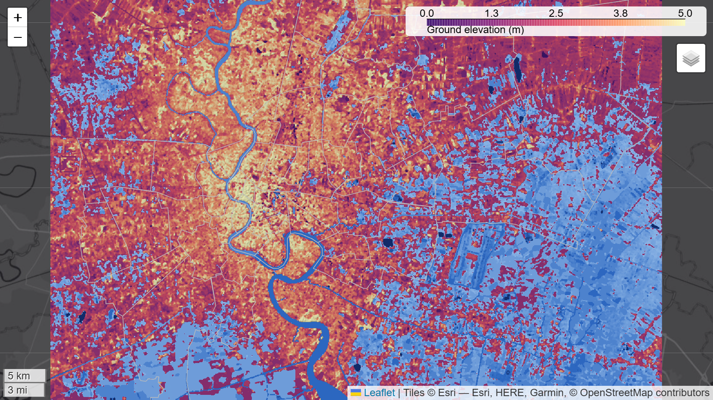
Water at 1.5 m (blue) over ground elevation (purple = lowest, yellow = highest). The low eastern districts and the coast flood first.
50 districtsBangkok's khet, ~10.9 M people (WorldPop 2020)
~65 m gridSatellite elevation, population & 5,500 river/canal segments
18 minSuggested live demo length, plus Q&A
Contents
The story in one minute — why Bangkok, why now
Before you present — setup checklist and agenda
Tour of the screen — what every control does
Live demo script — step by step, with what to click and what to say
The risk index and its weights — how it works and every reason to change the weights
The machine-learning model — what ten real floods (2011 and nine radar-mapped wet seasons) teach us
The current flood — what satellite radar sees this week, which model saw it coming, and whether that's luck
Buildings in 3D — 2.1 million buildings, and which ones the water reaches
How sure is this? — ranges from elevation error, chance-flooded maps, and where the ML model disagrees with itself
Key numbers cheat sheet
Anticipated questions
Limitations and next steps
Appendix — data sources and how to regenerate this guide
1. The story in one minute
Bangkok sits on the flat delta of the Chao Phraya river. Most of the city is only a metre or two above sea level, it is crossed by hundreds of canals (khlongs), and parts of it are slowly sinking. Water can arrive three ways: the river rising from the north, high tides pushing up from the Gulf of Thailand, and heavy monsoon rain that the drains can't clear fast enough. The 2011 floods showed how far water can spread across the region when these combine.
This tool asks a simple question: if the water rises to a given height, which parts of Bangkok go under first, and how many people live there? It answers it with free satellite and open data, live, while the audience watches.
Tip: Open with the current flooding. Show one headline or photo from a news source you trust, then say: “Let's see which parts of the city the terrain says are most exposed.” The app's own satellite view of this week's flood (Section 7) is your payoff later in the talk. Check any news figures yourself before quoting them.
Bangkok is one of the lowest-lying major cities in Asia. I built a model that lets us raise the water level and watch, district by district, where the city floods first and who is affected.
2. Before you present
Setup checklist
Install once: pip install -r requirements.txt
Download the data once (about 60 MB, cached in data/processed/): python scripts/prepare_data.py
Start the app: streamlit run app.py. It opens at http://localhost:8501.
Press F11 for full screen. Keep Dark basemap on, because it projects better.
Check your internet connection. The map background tiles stream online. The flood data itself is local.
Do a full run-through once. The first load takes a few seconds, and the animation takes about 10 seconds.
Reset to the starting state before you go on: water level 1.0 m, weights 0.50 / 0.30 / 0.20, layers Flood depth only.
Suggested agenda (about 18 minutes)
Time
Segment
Demo steps
0:00–1:00
Hook: current flooding and why Bangkok is exposed
—
1:00–2:30
What you're looking at
Steps 1–2
2:30–5:00
Raise the water: the animation
Steps 3–4
5:00–6:30
Why the east floods first: elevation
Step 5
6:30–7:30
River flood vs rain flood
Step 6
7:30–10:30
Risk index: changing the weights
Step 7
10:30–12:30
Machine learning: what really flooded in 2011
Step 8
12:30–14:30
The current flood from satellite radar
Step 9
14:30–16:30
Buildings in 3D: who the water reaches
Step 10
16:30–18:00
Charts, how sure we are (uncertainty), limitations
Steps 12–13
If something breaks live: refresh the browser tab (it keeps no state). If the map background is blank, the internet is down. The flood overlay still works, so carry on and mention it.
3. Tour of the screen
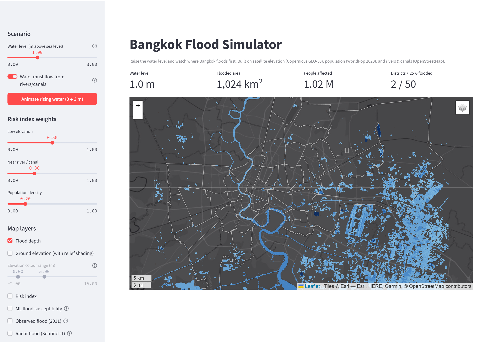
1
2
3
4
5
6
7
The app at its starting state: water at 1.0 m, flood depth shown on a dark basemap.
Water level slider (0–3 m above sea level). The main control of the whole demo.
“Water must flow from rivers/canals”. On: a river or tidal flood (low ground floods only if water can reach it). Off: rain pooling in every low spot.
Animate rising water. Plays 0 → 3 m in about 10 s. This is the moment that grabs the audience.
Risk index weights. How much low ground, nearness to water, and population density count toward risk (Section 5).
Map layers. Flood depth, ground elevation (with an adjustable colour range), chance flooded (elevation uncertainty), risk index, ML flood susceptibility, ML model disagreement, observed 2011 flood, radar flood (with a date picker), rivers & canals, flood defences, dark/light basemap.
Headline numbers. Water level, flooded area, people affected (whole map area), and how many of the 50 districts are more than 25% flooded. The grey “range” under each is the middle 90% of 50 simulations with elevation error (Section 9).
Interactive map. Zoom, pan, and hover any district for its details. The layer button is at the top right.
Below the map are nine tabs: Most affected districts, Elevation profile, Flood curve, Current flood, Buildings 3D, ML model, Validation, District table and Method & limitations.
4. Live demo script
1
Open on the starting view (1.0 m)
Point at the four headline numbers, then at the blue patches in the east and along the coast.
At one metre above sea level, about 1,000 square kilometres of greater Bangkok is under water, affecting roughly a million people. Notice it isn't the centre that goes first. It's the east and the coast.
2
Hover over a district
Move the mouse over Lat Krabang (east, near the airport) and pause.
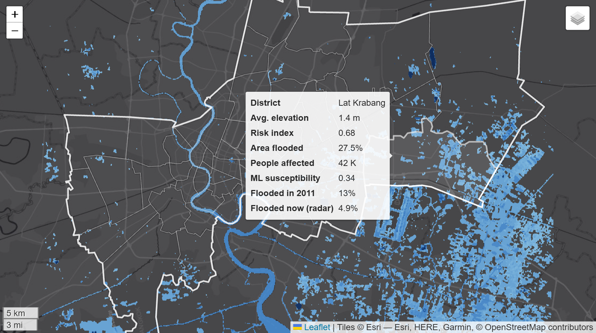
Every district shows its average elevation, risk index, share flooded and people affected, plus the ML score and how much of it flooded in 2011. Lat Krabang is Bangkok's lowest district on average (1.4 m).
Lat Krabang averages just 1.4 metres above sea level, the lowest in Bangkok. At one metre of water, more than a quarter of it is already flooded.
3
Raise the water by hand
Drag the slider slowly from 0.5 m to 2.0 m. Let the map redraw between moves.
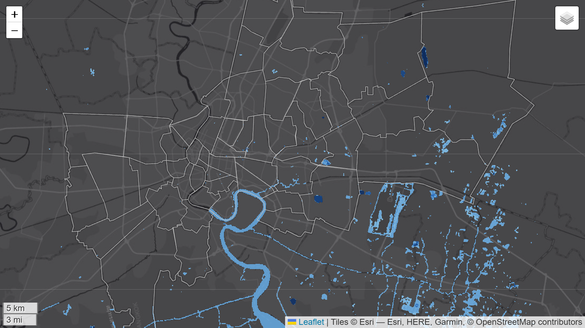
0.5 m Mostly the river, the coast and the lowest paddy fields.
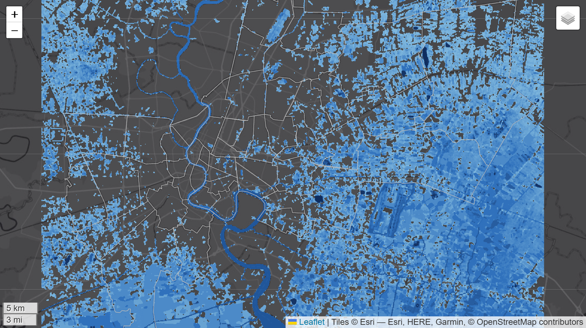
2.0 m About 2,260 km² and 3.9 M people. 15 of 50 districts are more than 25% flooded.
Every half metre matters. Going from one to two metres roughly doubles the flooded area and nearly quadruples the number of people affected.
4
Play the animation (the showcase moment)
Click Animate rising water (0 → 3 m) and stay quiet for the first few seconds.
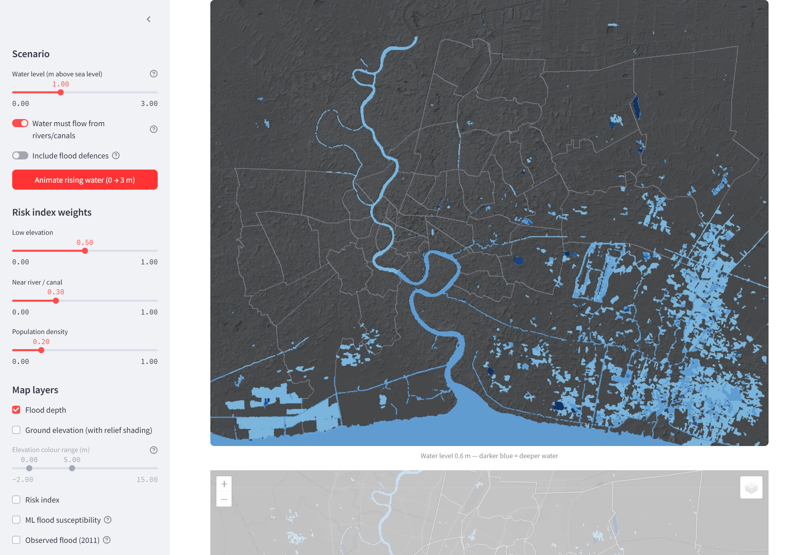
The animation draws the flood over shaded terrain and district borders while the numbers count up. When it finishes, move the slider to get the interactive map back.
Watch where the water goes first. It spreads from the coast and the eastern lowlands and moves inward along the canals. By three metres, 35 of Bangkok's 50 districts are more than a quarter under water.
5
Explain why: show the ground elevation
Untick Flood depth, tick Ground elevation. Then turn Flood depth back on at 1.5 m.
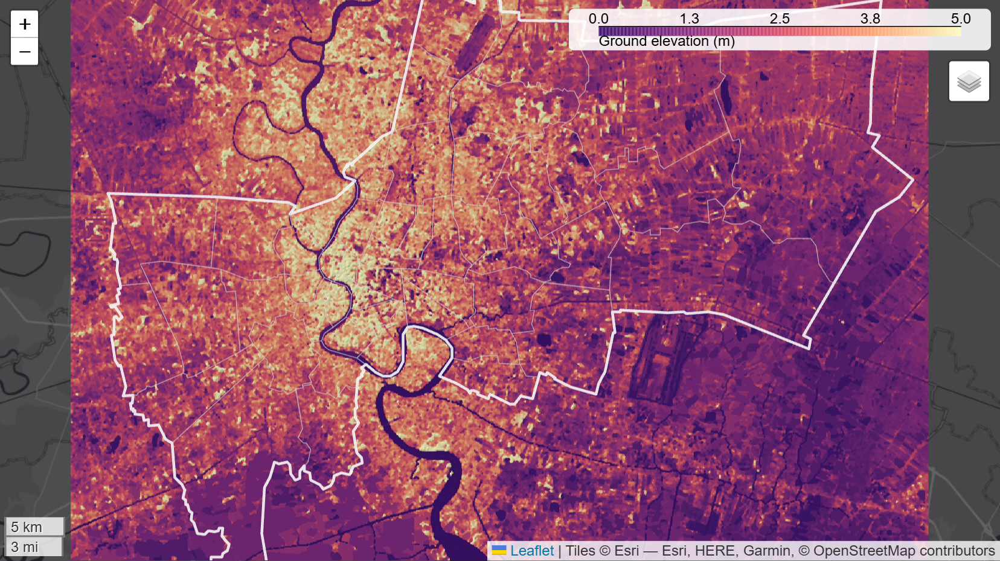
Ground elevation stretched over 0–5 m. Purple is lowest, yellow is highest. The east and the coast are clearly lower.With flood depth on at 1.5 m, the water fills exactly the purple areas.
The colour-range slider is the key to seeing elevation well. Bangkok is so flat that a full 0–100 m scale would look like one colour. Narrowing it to 0–5 m (the default), or even −1 to 2 m, brings out small differences. Anything outside the range shows as the end colour.
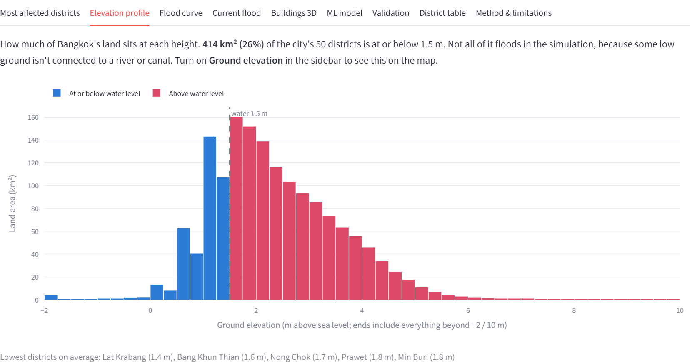
The Elevation profile tab shows how much land sits at each height. At 1.5 m, 414 km² (26%) of Bangkok's 50 districts is at or below the water line.
About a quarter of Bangkok's land is less than one and a half metres above the sea. That single fact explains most of what we just saw.
Be ready for: “Why does the centre look high?” The elevation data is a surface model, so buildings add height in the dense core. The tool reduces this, but doesn't remove it. The centre is also protected in reality by flood walls and dikes that this model doesn't include.
6
River flood vs rain flood
At 1.0 m, switch “Water must flow from rivers/canals” off.
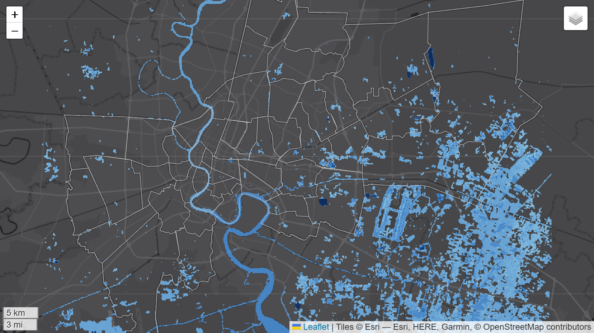
On River/tidal flood: 1,024 km², 1.02 M people.
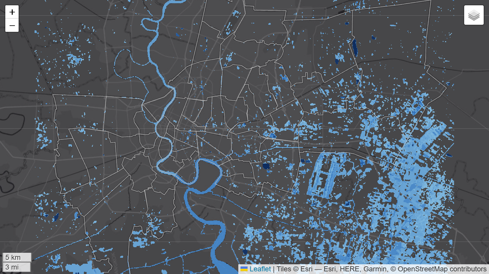
Off Rain pooling: 1,104 km², 1.23 M people. Scattered low spots across the city now fill too.
With the switch on, water has to physically reach a place from a river or canal. With it off, we're modelling heavy rain collecting in every low spot. In Bangkok the difference is small, because the canal network connects almost everything. That's a finding in itself.
7
Add the flood defences
Set the level to 2.0 m, switch “Water must flow from rivers/canals” back on, then switch on “Include flood defences”. Hover a defence line for its crest height and source.
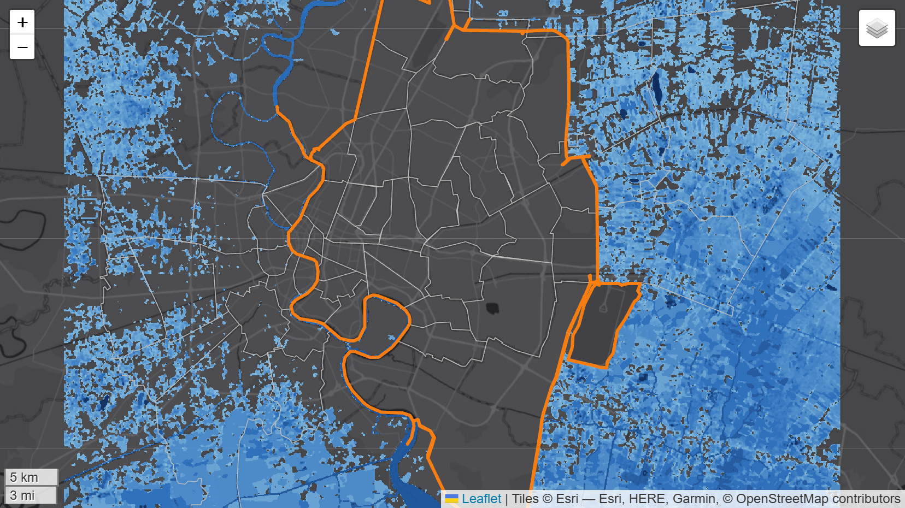
2.0 m, defences on Orange lines = walls holding at this level: the Chao Phraya river walls, the King's Dike around eastern Bangkok, and the Suvarnabhumi Airport dike. The polder inside stays dry; the farmland east of the King's Dike, the west bank and the coast still flood.
Bangkok's 50 districts
1.0 m
1.5 m
2.0 m
2.5 m
People affected, no defences
0.32 M
0.89 M
1.93 M
3.41 M
People affected, with defences
0.12 M
0.36 M
0.80 M
3.38 M
Flooded area, no defences → with
168 → 132 km²
371 → 271 km²
678 → 490 km²
937 → 933 km²
The walls more than halve the people affected up to 2 m, mainly by keeping the inner east dry: at 2.0 m, Prawet goes from 64% flooded to 0%, Suan Luang from 40% and Bang Kapi from 36%, which together is about 370,000 people.
At 2.5 m the King's Dike is overtopped and almost everything floods at once. Defences don't remove the risk; they move it to a cliff edge.
Outside the walls nothing changes: Nong Chok (70% at 2.0 m), Bang Khun Thian (67%) and Thung Khru stay as they were. That's the 2011 story: the walls protected the centre while water stood in the east for weeks.
Here's the trade-off Bangkok makes. The walls keep the centre dry up to about two and a half metres, but every drop they hold back has to go somewhere, and that's the farmland outside them. Above the crest, the protection is gone all at once.
Be honest about the limits: crest heights are the low end of published figures, one value per section; real walls vary and have gaps. The northern closure along Bangkok's boundary is approximate: it keeps Don Mueang dry, but Don Mueang flooded in 2011. Pumps and drainage tunnels aren't modelled, and neither are the west bank's polder dikes. With defences, the bathtub matches real floods better: ROC-AUC 0.67 → 0.72 for 2011 and better on all 8 radar passes, but still well behind the ML model.
8
Change the risk weights
Tick Risk index, untick Flood depth, then move the three weight sliders. The full talk track and every reason to change the weights are in Section 5.
9
Show what really flooded in 2011 (machine learning)
Untick Risk index, tick Observed flood (2011) with Flood depth on, then open the ML model tab. The full talk track is in Section 6.
So far, every map has been a model. This one is what actually happened. And it's not what the bathtub predicted.
10
Show this week's flood (satellite radar)
Untick Observed flood (2011) and Flood depth, tick Radar flood (Sentinel-1), then open the Current flood tab. The full talk track is in Section 7.
Everything so far was history or simulation. This is Bangkok this week, seen from space through the monsoon clouds. And a model trained on past floods, none of them from this year, predicted it.
11
Show the buildings in 3D
Set the water level to 1.5 m, open the Buildings 3D tab, start on Whole city, then switch to District and pick Lat Krabang or Nong Chok. Right-drag to tilt and rotate. The full talk track is in Section 8.
Maps of blue areas are abstract. These are 2.1 million real buildings. At one and a half metres, the water reaches about 140,000 of them, and 58 hospitals, schools and emergency stations.
12
Show the charts
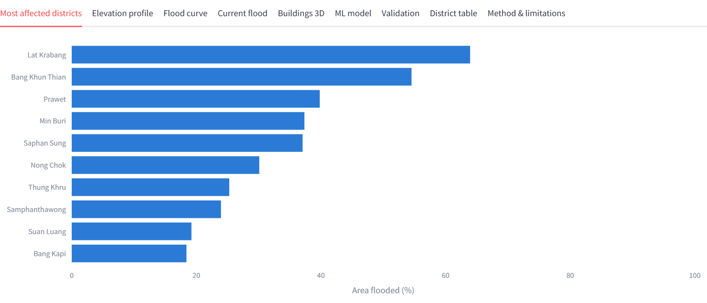
Most affected districts at the current level.
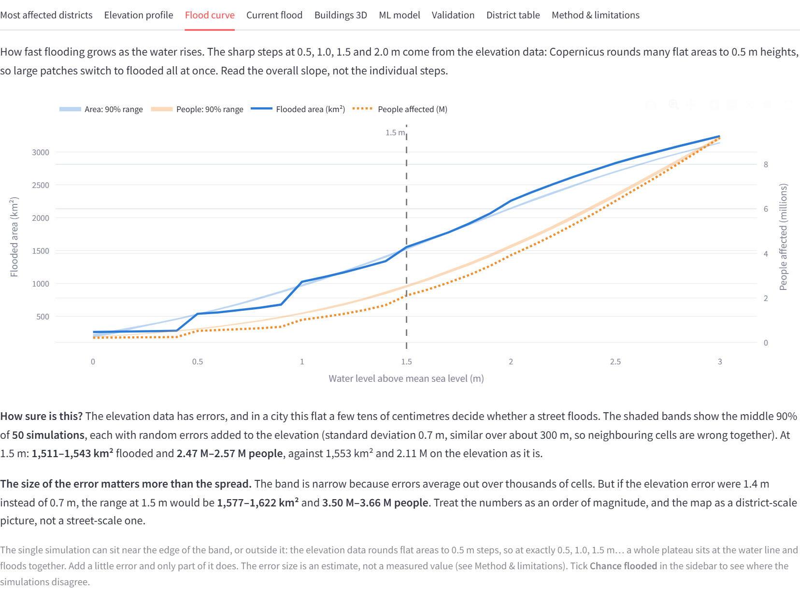
Flooded area and people affected across all levels. The shaded bands are the 90% range with elevation error (Section 9).
About the steps in the flood curve: the jumps at exactly 0.5, 1.0, 1.5 and 2.0 m come from the elevation data, not from the real world. The Copernicus dataset rounds many flat areas to 0.5 m heights, so big patches flip to “flooded” together. The shaded uncertainty bands are smooth, because a little elevation error breaks those plateaus up. Point the audience to the overall trend: the number of people affected climbs faster once the water passes about 1.5 m.
Then tick Chance flooded (elevation uncertainty) with Flood depth off. The full talk track is in Section 9.
One more honest question: how sure is all this? Here is the same flood rerun fifty times with realistic errors in the elevation. The dark blue floods every time; the pale areas only sometimes.
13
Close
This isn't a forecast. It models Bangkok's main walls and dikes but not its pumps or drainage tunnels. It also shows how much its answers depend on imperfect elevation data. From free satellite data it shows where the terrain puts people at risk, and a model trained on ten real floods tells us which of those warnings to trust. Every score has an error bar, and this year's floods are kept out of training, so the test stays honest.
5. The risk index and its weights
What the index is
Every ~65 m cell gets a score from 0 to 1 that blends three factors, each scaled from 0 to 1:
Factor
How it's measured
What it represents
Low elevation
Lowest ground in the area scores 1, highest scores 0 (2nd–98th percentile)
Hazard: where water collects
Near river / canal
1 on a waterway, fading with distance (about 37% at 1 km)
Because the index is divided by the sum of the weights, only the ratios matter: 0.5 / 0.3 / 0.2 gives exactly the same map as 1.0 / 0.6 / 0.4. District scores are the average of their cells, and they only mean something relative to each other.
Weights change only the risk layer and the “Risk index” column. They don't change the flood simulation, which depends only on the water level and the connectivity switch. Make this clear so nobody thinks the weights move the water.
Why change the weights? There's no single “correct” setting
Choosing weights is a judgment call, not a law of physics. Here are the reasons to change them, in the order they're most useful in a presentation:
Match the type of flood you're discussing. For a river or tidal flood, raise Near river / canal, because overflow reaches the banks first. For a cloudburst or drainage failure, raise Low elevation and drop Near river / canal, because rain collects in low spots wherever they are. Pair this with the connectivity switch.
Match the question your audience is asking. Engineers and land-use planners care about hazard (where the water goes), so set population to 0. Emergency managers, hospitals and aid groups care about people, so raise population density. The same data answers different questions.
Test how robust the result is (sensitivity analysis). If a district ranks near the top under every reasonable weighting, it's a strong priority, and nobody can say you picked weights to get your answer. Suan Luang ranks #1 in 4 of the 5 scenarios below.
Allow for weaknesses in the data. The elevation data includes buildings, so it overstates height in the dense centre. Leaning heavily on elevation can therefore understate central risk. OpenStreetMap's canal mapping is more complete in some areas than others. If you distrust a factor, lower its weight and say why.
Calibrate against real floods. Once you have an observed flood map (for example from satellite radar), you can pick the weights that best reproduce it. This turns opinion into evidence. This project now does it (Section 6), and the result is striking: against the 2011 flood, the default weights score below random.
Reflect stakeholder or policy priorities. A city might decide that protecting people counts twice as much as protecting land. Weights are where values enter a model, so it's better to make them visible and adjustable than hidden. (Formal methods such as pairwise-comparison surveys exist for setting them with stakeholders.)
Explain what drives risk. Setting one weight to 1 and the others to 0 shows each factor on its own. It's a quick way to show the audience what each ingredient contributes.
Five weighting scenarios, with the results they produce
Weights are listed as low elevation / near water / population. The top 5 are Bangkok's highest-scoring districts under each setting, computed from the app's data.
Scenario
Weights
When to use it
Top 5 districts (score)
Balanced (default)
0.50 / 0.30 / 0.20
General overview and first impressions
Suan Luang 0.71, Prawet 0.70, Saphan Sung 0.69, Bang Kapi 0.68, Lat Krabang 0.68
River / tidal flood
0.30 / 0.60 / 0.10
Chao Phraya overflow, high tides, canal overtopping
Cloudbursts and drainage overload (turn connectivity off too)
Suan Luang 0.68, Prawet 0.66, Bang Kapi 0.66, Bang Na 0.65, Phra Khanong 0.65
People first
0.25 / 0.15 / 0.60
Emergency response, evacuation, aid planning
Suan Luang 0.80, Phra Khanong 0.79, Bang Kapi 0.77, Din Daeng 0.77, Wang Thonglang 0.76
Hazard only
0.60 / 0.40 / 0.00
Engineering, zoning, where not to build
Lat Krabang 0.74, Bang Khun Thian 0.73, Prawet 0.70, Min Buri 0.69, Saphan Sung 0.69
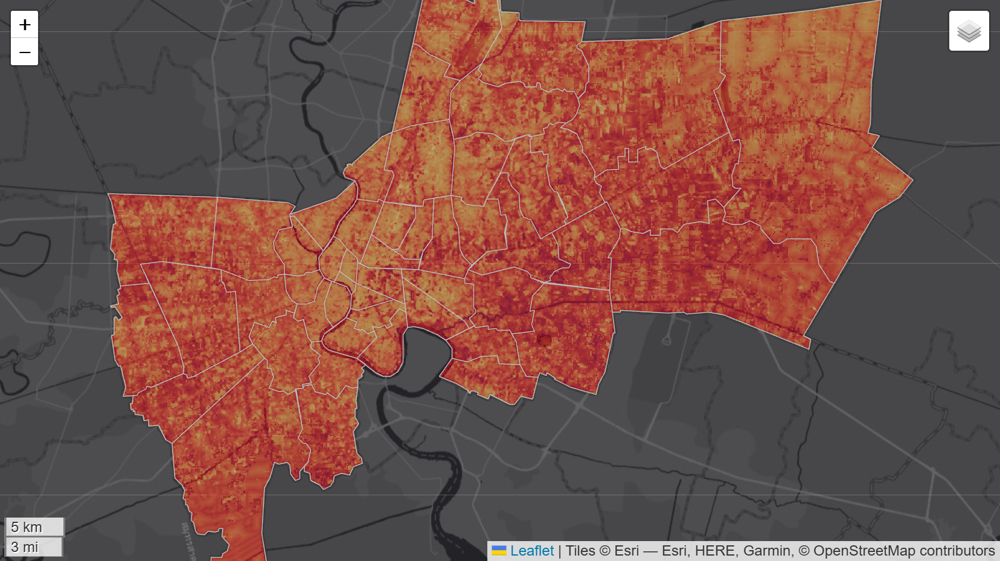
Balanced 0.50 / 0.30 / 0.20
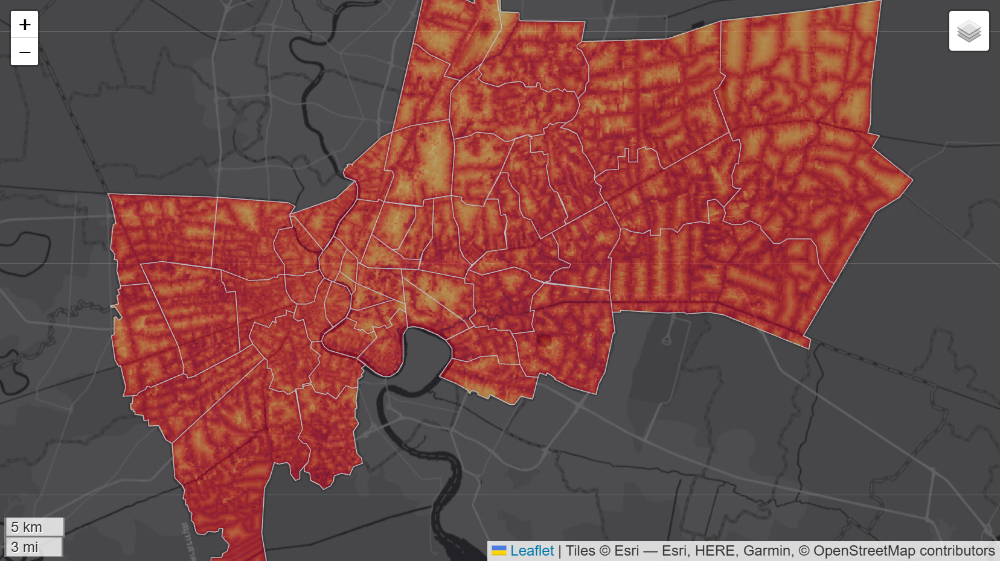
River / tidal 0.30 / 0.60 / 0.10. The canal network lights up.
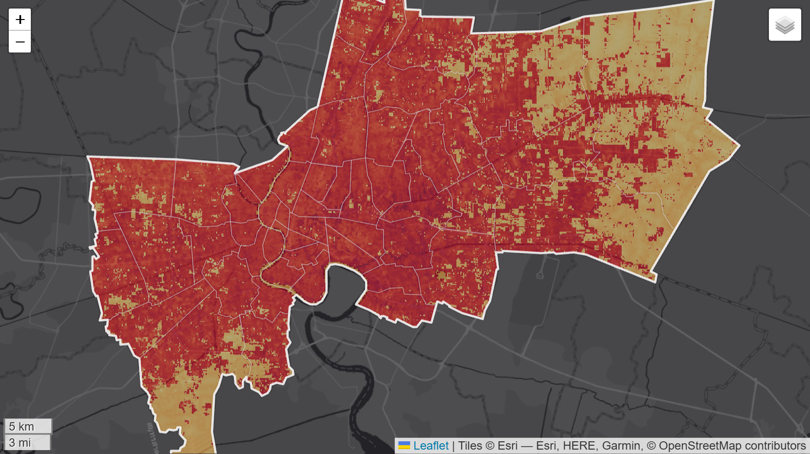
People first 0.25 / 0.15 / 0.60. The dense inner city turns red and the rural east fades.
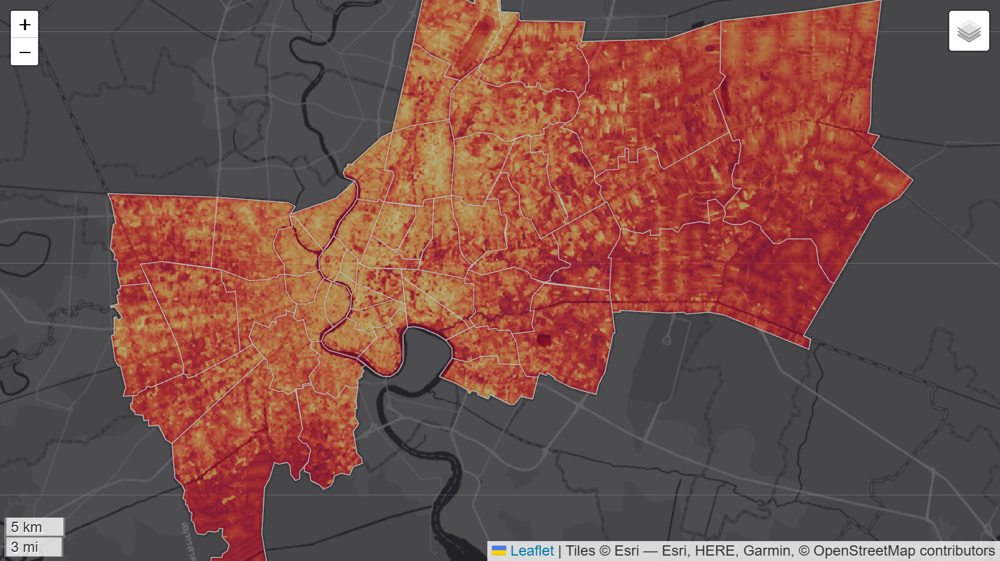
Hazard only 0.60 / 0.40 / 0.00. The low east and the coast dominate.
What to point out
Suan Luang and Bang Kapi stay near the top in 4 of 5 settings. They're low, cut through by canals, and densely populated, so they're robust priorities.
The hazard-only ranking matches the flood simulation. Lat Krabang and Bang Khun Thian top the hazard ranking and are the first districts to pass 25% flooded as the water rises. Two independent views agree, which is a useful consistency check.
“People first” reorders the map. The rural east drops away and dense inner districts (Din Daeng, Wang Thonglang) appear. Where risk is highest depends on whether you're protecting land or people.
The weights are where judgment enters the model, so I've made them a slider instead of hiding them. Whatever you care about, river floods or rain, land or people, a few districts come out on top every time. Those are the ones to act on first.
6. The machine-learning model
The risk index uses weights that we chose. The machine-learning model asks a different question: given where Bangkok actually flooded, which combination of terrain and land cover best explains it?
How it was built
What really flooded, ten times: the Global Flood Database's map of the 2011 flood (event DFO_3850, MODIS satellites, 250 m; 21% of cells flooded), plus nine wet seasons, 2017–2025, mapped from Sentinel-1 radar. For each season, every August–November pass is compared with the same weeks of the year before; a cell counts as flooded if it was flooded on at least two passes. In those seasons 2–5% of the land flooded.
Every flood counts equally: 200,000 labelled cells are drawn from each, so 2011 doesn't swamp the seasons or the reverse.
This year is kept out: nothing from 2026 is trained on, so this year's radar passes (Section 7) are a fair test.
What the model sees: elevation, height above the nearest waterway, elevation compared with the surroundings, slope, distance to any canal and to the Chao Phraya, and land cover (cropland, water, trees, grassland, wetland) from ESA WorldCover.
Model: LightGBM, a gradient-boosted tree model that works well on this kind of table-style data. The original model, trained on 2011 alone, is kept for comparison.
Fair tests: the map is cut into 4 km blocks, and each method is scored only on blocks the model never saw, in any year. And each flood in turn is left out completely: train on the other nine, test on that one.
ROC-AUC (PR-AUC)
ML, all floods
ML, 2011 only
Bathtub + defences
Bathtub
Risk index
2011 flood, unseen blocks
0.85 (0.58)
0.87 (0.68)
0.72 (0.33)
0.67 (0.29)
0.45 (0.18)
2017–2025 seasons, unseen blocks (mean)
0.98 (0.58)
0.92 (0.27)
0.79 (0.09)
0.75 (0.07)
0.42 (0.03)
Each season left out (range)
0.97–0.99
0.90–0.93
0.77–0.81
2026 radar passes, never trained on (9, greater Bangkok)
0.91–0.96
0.82–0.91
0.74–0.86
0.69–0.85
0.37–0.57
ROC-AUC: how often the method ranks a flooded cell above a dry one (0.5 = coin flip, 1.0 = perfect). PR-AUC: how well it finds flooded cells without false alarms; a random guess scores the flooded share (0.21 in 2011, 0.02–0.05 in the seasons). Every score has a 95% interval in the app.
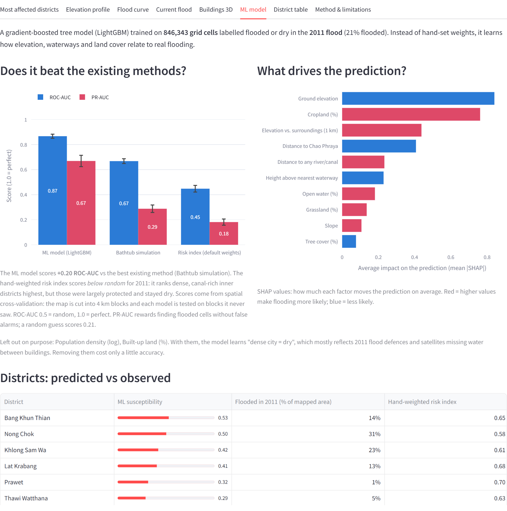
The ML model tab: the model vs the existing methods with 95% intervals (2011 flood), what drives its predictions (SHAP), and predicted vs observed flooding by district. An expander lists the ten training floods with each season's rain and river.
Show it on the map
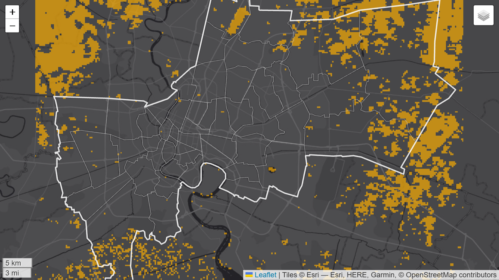
Observed 2011 Amber = flooded. The water came from the north (Nonthaburi, Pathum Thani, Don Mueang) and swept through the eastern farmland. The inner city stayed dry.
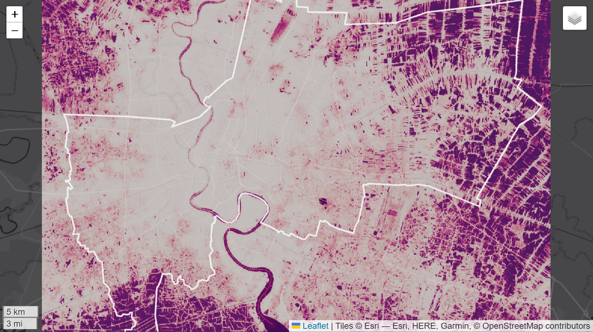
ML model Dark = high flood chance. It picks out the same northern and eastern farmland, and it had no idea where Bangkok is.
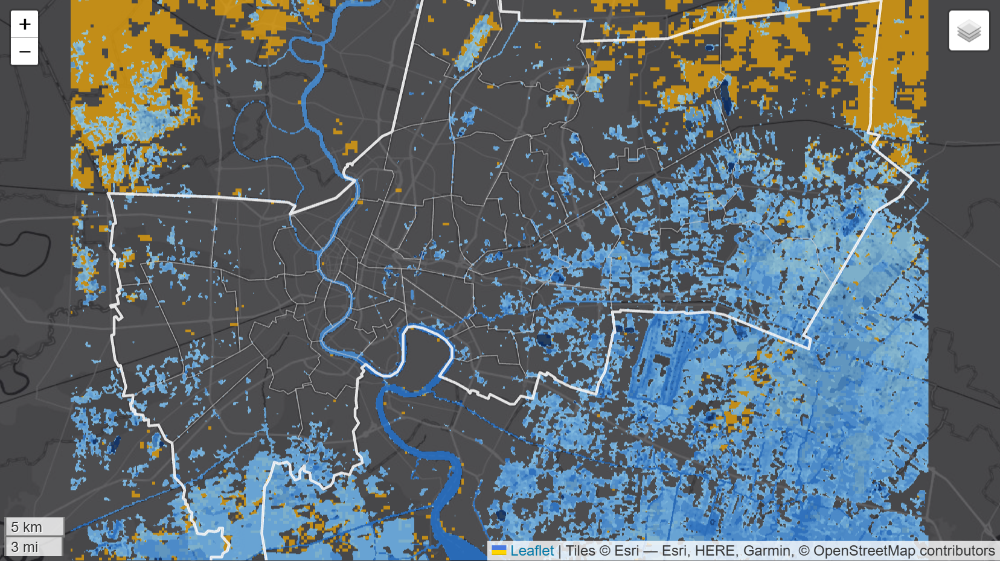
Observed 2011 vs bathtub at 1.5 m Amber (what flooded) and blue (what the bathtub predicts) overlap only partly. The bathtub floods the east and the coast first, but in 2011 the water arrived from upstream, a kind of flood a single “water level” can't represent.
What to point out
The ML model beats every existing method by a wide margin, on every flood and every test.
More floods helped, with one trade-off. Trained on ten floods, the model predicts each left-out season far better than the 2011-only model (0.97–0.99 vs 0.90–0.93), and this year's passes too. On the extreme 2011 flood it is slightly worse (0.85 vs 0.87), because nine of its ten floods are ordinary seasons. It is the better guide to a typical year; the 2011 map stays the guide to a rare, extreme one.
What each year was like: the training-flood table shows each season's rain and river. 2011 stands out for its river, not its local rain: the Chao Phraya ran above 130% of normal for 122 days, while Bangkok's own rain was ordinary. The water came down from the north.
The hand-weighted risk index scored below random. It ranks dense, canal-rich inner districts highest, but in 2011 those were protected by flood walls and pumping and stayed dry. It's the strongest argument for testing a model against reality.
What the model learned: low ground and cropland flooded, and being closer to the Chao Phraya raised the chance. Farmland on the city's edge absorbed the flood while the protected core stayed dry.
A judgment call made visible: population density and built-up land were left out on purpose. With them the model scored higher (0.89), but its main lesson became “dense city = dry”. That mostly reflects defences, plus the satellite's difficulty seeing water between buildings, and it would be a dangerous message in a flood tool.
The weights I picked by hand pointed at the wrong places. They scored worse than a coin flip against what actually happened. A model that learned from ten real floods ranks flooded places above dry ones more than 95% of the time in a year it has never seen. That's why you test models against reality.
Be honest about the limits: the 2011 map is 250 m resolution, and radar and MODIS both under-count flooding between buildings. Some coastal “flooding” is shrimp and fish ponds. Each radar season is compared with the year before, so places that flood every year aren't counted, and a wet year can hide floods in the next. The model knows nothing about short cloudbursts in the city, and it under-rates places that flood only in an extreme year like 2011, such as Don Mueang, whose airport famously flooded then.
7. The current flood
Sentinel-1 radar satellites pass over Bangkok every 4–8 days. Radar sees through cloud, and calm open water reflects the signal away from the satellite, so it shows up dark. For each pass, the app marks water that is unusual for the time of year: cells that are dark now and much darker than the same weeks last year, seen from the same orbit, with permanent rivers and ponds removed.
Before you present: the figures below are from the 27 Sep 2026 pass. To add passes since then, re-run python scripts/fetch_current_flood.py --gee-project YOUR_PROJECT and python scripts/evaluate_current.py, and check the numbers in the app before quoting them.
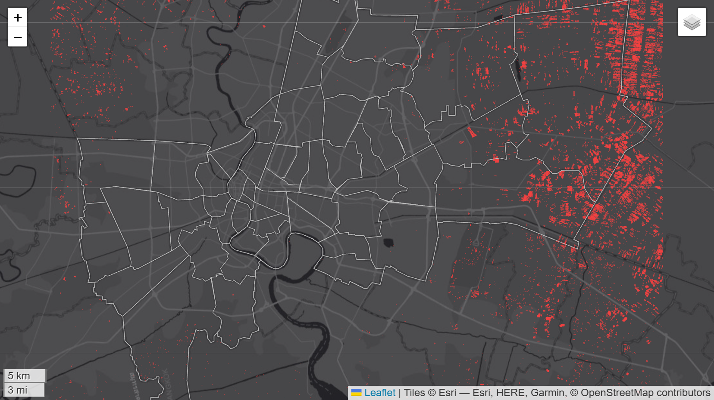
9 Oct 2026 Red = unusual water seen by radar, on the latest pass (the sidebar date picker opens on it). Twelve days after the 27 Sep rain it is still concentrated in the eastern farmland: Nong Chok, Lat Krabang, Min Buri, and beyond the city boundary.
The story in three numbers
About 200 mm of rain in three days (about 122 mm on 25 Sep alone, weather-model estimate), on top of a Chao Phraya already running about 15% above normal. By the 27 Sep pass the river was at about 130% of normal for the date (GloFAS river model).
99 km² of unusual water across greater Bangkok on 27 Sep, up from 27 km² on 19 Sep. 32 km² of it is inside the city's 50 districts.
Most flooded districts: Nong Chok 8.3% of its area, Lat Krabang 5.9%, Min Buri 2.8%, Khlong Sam Wa 2.0%. Nong Chok was also the most flooded district in 2011.
Two days of extreme rain, and the water went exactly where the terrain says it would: the low farmland in the east. Nong Chok tops the list this week, just as it did in 2011.
And the river was already running high before the rain started, so the water had less room to drain away.
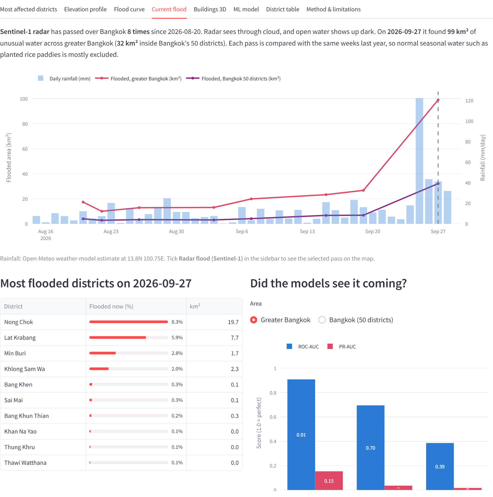
The Current flood tab: daily rainfall (bars) and radar-detected flooded area per pass (lines); below it, Chao Phraya river flow against its normal for the date (the shaded gap is how far above normal it is); and a table of every pass with its rain and river flow. Further down the tab: the most flooded districts and how each method scored against this flood. The sidebar date picker also shows each pass's rainfall.
Did the models see it coming?
None of the methods has ever seen this flood, which makes this the fairest test in the project.
Method, scored against the 27 Sep radar map
ROC-AUC, greater Bangkok
ROC-AUC, Bangkok (50)
PR-AUC, greater Bangkok
ML model (all floods)
0.96
0.98
0.344
ML model (2011 only)
0.91
0.94
0.154
Bathtub + flood defences
0.75
0.88
0.042
Bathtub simulation
0.70
0.83
0.036
Hand-weighted risk index
0.39
0.47
0.017
Random guess
0.50
0.50
0.023
A model trained on past floods predicted this one well. It finds flooded cells about 15 times better than random (PR-AUC 0.344 vs 0.023), twice as well as the model trained on 2011 alone.
It has beaten the bathtub on all 9 radar passes since late August, every time clear of the 95% interval. The hand-weighted index is below random again.
The next pass, 9 Oct: 104 km² of unusual water, with little new rain. The water hasn't drained: Nong Chok is still 8.3% flooded, Lat Krabang 4.9%. The model scores the same (0.96).
None of this year's floods were in the training data. On a flood it had never seen, the model pointed at the right places far better than chance. That's the difference between a map that looks convincing and a model that's been tested.
Be honest about the limits: radar misses water between buildings, so flooding in the dense city is under-counted. Flooded fields and runways can look like floodwater. Most of this flood is in farmland, which is also where the ML model expects flooding, so part of the match comes from that shared pattern. Each pass is a snapshot every few days, and the rainfall figures are weather-model estimates. River flow is also a model estimate (GloFAS) that reads high on the Chao Phraya, so compare it with its normal rather than quoting the exact m³/s. Pass dates are in UTC: a descending pass dated 19 Sep was taken at about 06:10 on 20 Sep, Bangkok time.
The Validation tab: is the difference real, or luck?
The Validation tab collects every test in one place: every training flood (scored on unseen blocks), each training flood left out in turn, and every radar pass, for every method (including the bathtub with flood defences and the old 2011-only model), with a 95% interval on each score. Neighbouring cells flood together, so the intervals come from re-scoring on the map's 4 km blocks resampled 200 times (a spatial block bootstrap). The difference from the bathtub gets its own interval: when it stays above zero, the ML model's lead isn't luck.
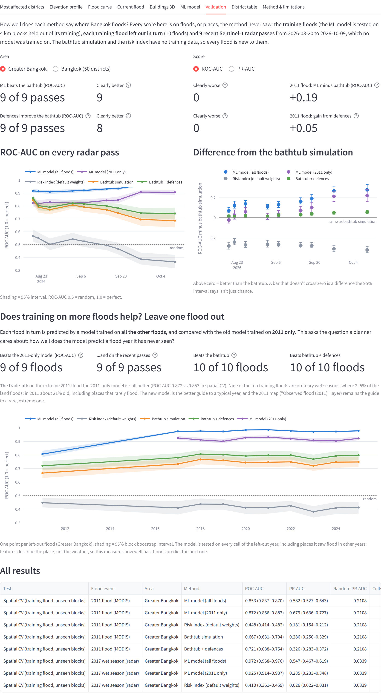
The Validation tab: how often the ML model beats the bathtub, scores over time with shaded 95% intervals, each method's difference from the bathtub, and every result in a table that can be downloaded as CSV. Switch between ROC-AUC and PR-AUC, and between greater Bangkok and the 50 districts.
ML model (all floods) vs bathtub, 9 radar passes (20 Aug – 9 Oct)
Greater Bangkok
Bangkok (50)
Higher ROC-AUC
9 of 9
9 of 9
Clearly higher (95% interval above zero)
9
9
Clearly lower
0
0
27 Sep ROC-AUC, ML all floods (95% interval)
0.96 (0.96–0.97)
0.98 (0.97–0.98)
27 Sep ROC-AUC, ML 2011 only (95% interval)
0.91 (0.89–0.92)
0.94 (0.93–0.95)
27 Sep ROC-AUC, bathtub (95% interval)
0.70 (0.65–0.73)
0.83 (0.79–0.87)
Every score here has an error bar. On the 27 September flood the new model's lower bound is above the old model's upper bound, and far above the bathtub's, so the gap isn't luck.
Be honest about the limits: passes a few days apart see the same flood, so “9 of 9” is a trend, not 9 independent trials. On quiet passes under 0.5% of cells flooded, so PR-AUC is low for every method; compare it with the random-guess line. Most detected flooding is farmland on the city's edge, so the scores mostly describe the rural fringe.
8. Buildings in 3D
The Buildings 3D tab turns flooded area into something people recognise: 2,116,261 buildings across Bangkok's 50 districts, each with its footprint and height, coloured by whether the water reaches it. Footprints and heights come from Google Open Buildings, which is mapped from satellite imagery by AI. Hospitals, clinics, schools, universities, police and fire stations come from OpenStreetMap.
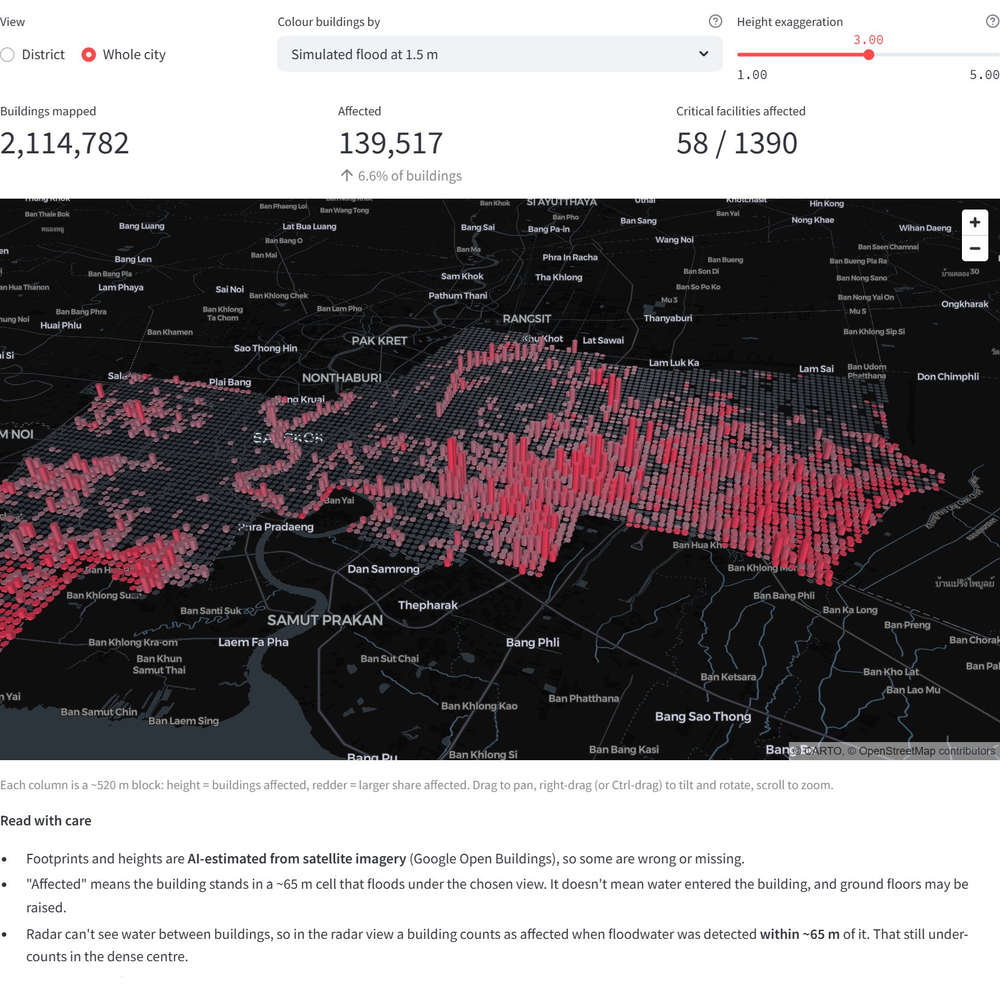
Whole city at 1.5 m Each column is a ~520 m block: height = buildings affected, redder = a larger share affected. The eastern districts and the southwest light up, and the protected centre stays grey.
How to use it
View:Whole city for the overview, District for individual 3D buildings. The district list is sorted by how many buildings are affected.
Colour buildings by: the simulated water level, this week's radar flood, the ML model, or the 2011 flood. It follows the sidebar, so moving the water-level slider updates the buildings.
Height exaggeration: Bangkok is mostly low-rise. Stretching heights 2–3× makes the 3D easier to read.
Building shapes: districts over 40,000 buildings open in Light mode (each building a small column at its true height), which loads much faster. Switch to Footprints for true shapes, which takes up to about 30 seconds in the largest districts.
Camera: the district view opens on the flooded area. Scroll to zoom, right-drag (or Ctrl-drag) to tilt and rotate, and hover a building for its height and flood value.
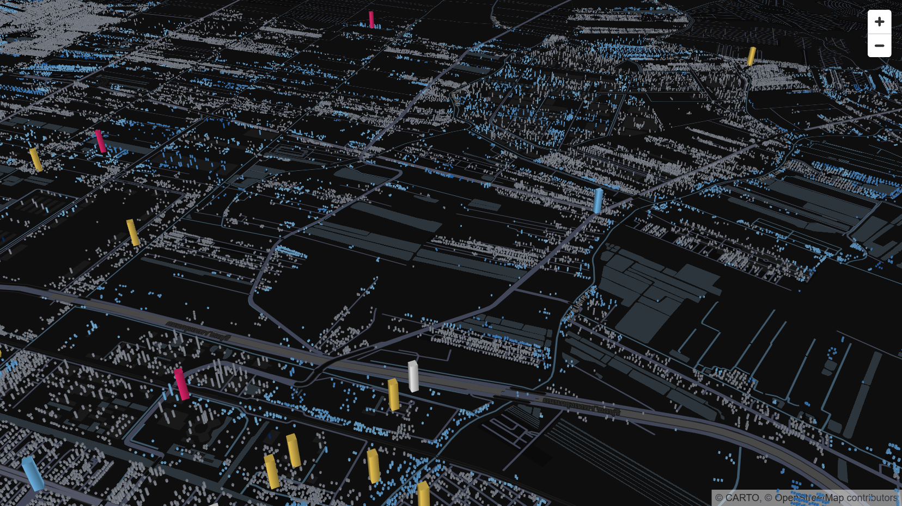
Lat Krabang at 1.5 m Blue = affected, grey = dry. The tall markers are critical facilities: white = hospital/clinic, yellow = school/university, blue = police/fire, pink = affected.
The numbers to quote
Scenario
Buildings affected
Share
Critical facilities affected
Simulated 0.5 m
7,021
0.3%
4 of 1,390
Simulated 1.0 m
36,711
1.7%
17
Simulated 1.5 m
139,517
6.6%
58
Simulated 2.0 m
353,200
16.7%
148
This week's radar flood (27 Sep, within ~65 m)
5,366
0.3%
0
Flooded in 2011
29,796
1.4%
17
Every half metre roughly triples the damage: 37k buildings at 1.0 m, 140k at 1.5 m, 353k at 2.0 m.
District examples at 2.0 m: Nong Chok 36,959 of 87,532 buildings; Lat Krabang 45,453 of 76,013; central Pathum Wan only 753 of 9,786.
This week: nearly 3,000 buildings in Nong Chok stand right next to radar-detected floodwater.
Going from one metre to two doesn't double the damage. It multiplies it almost tenfold, from 37,000 buildings to 353,000. That's the number a city has to plan for.
Be honest about the limits: footprints and heights are AI estimates and some are wrong or missing. “Affected” means a building stands in a ~65 m cell that floods, not that water entered it; many ground floors are raised. Radar can't see water between buildings, so in the radar view a building counts when floodwater was detected within ~65 m. In the six largest districts, footprints under 30 m² (sheds and the like) were left out to keep the view fast.
9. How sure is this? Uncertainty
Every number so far came from one simulation on one elevation map. But satellite elevation has errors, and in a city this flat a few tens of centimetres decide whether a street floods. The app now shows how much the answers move when the elevation is a little wrong, and where the ML model is least sure of itself.
Elevation error: ranges on every headline number
How it works: the bathtub simulation is rerun 50 times. Each run adds random errors to the elevation map: standard deviation 0.7 m, correlated over about 300 m, so neighbouring cells are wrong together. This way of simulating DEM error follows Hawker et al. (2018). The defence crest heights stay fixed.
Where you see it: a grey “range” under the flooded area, people affected and district count (the middle 90% of runs); a shaded band on the Flood curve tab; and the Chance flooded map layer.
Why 0.7 m: it's an assumption, and the guide should say so. Copernicus elevation is off by about 1.6 m on average in built-up areas (Hawker et al. 2022), mostly because it includes buildings. The app takes the lowest value in each ~65 m cell, which removes much of that.
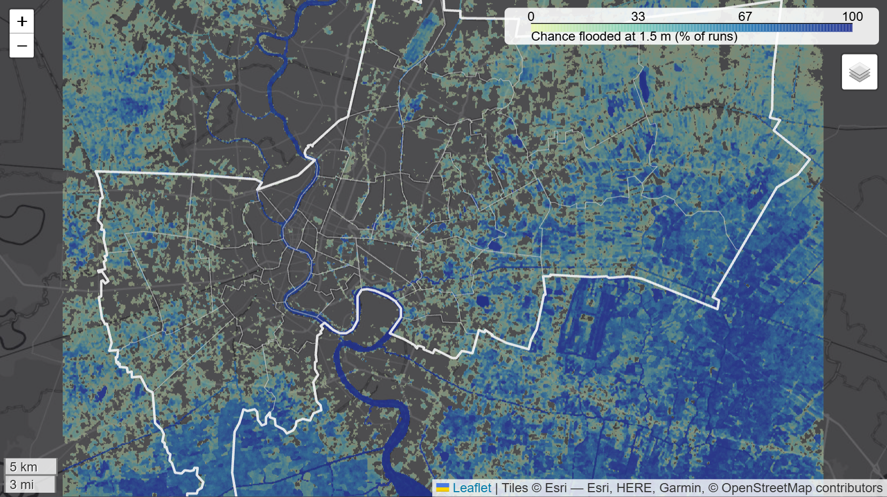
Chance flooded, 1.5 m Dark blue = floods in nearly every run; pale = floods only in some. Only the lowest ground by the coast and in the east is close to certain.Flood curve The shaded bands are the 90% range over the 50 runs. The text below the chart gives the range at the current level and the result with twice the error.
The numbers to quote (river mode, greater Bangkok)
Level
Flooded area: single run [90% range]
People: single run [90% range]
Districts >25%
1.0 m
1,024 km² [951–984]
1.02 M [1.26–1.34]
2 [2–2]
1.5 m
1,553 km² [1,511–1,543]
2.11 M [2.47–2.57]
7 [7–10]
2.0 m
2,259 km² [2,130–2,162]
3.92 M [4.24–4.38]
15 [17–21]
Totals are stable; places are not. Errors average out over thousands of cells, so the flooded area moves by only a few percent. But at 1.5 m only 69 km² of Bangkok floods in at least 90% of runs; another 299 km² floods in 50–90%, and 487 km² in 10–50%. The single run says 371 km².
The single run sits outside its own range. The elevation data rounds flat land to 0.5 m steps, so at exactly 1.0 m a whole plateau floods at once. Add a little error and only part of it does, which lowers the area. Small dips also let water through to populated land, which raises the people count.
The error size matters most. With twice the error (1.4 m), the range at 1.0 m becomes 1,135–1,174 km² and 2.24–2.36 M people. Quote the people figures as an order of magnitude.
One simulation gives you one number, and it looks precise. Rerun it fifty times with realistic errors in the elevation, and the city-wide totals barely move, but which street floods changes from run to run. So read this as a district-scale picture, not a street map.
ML model disagreement
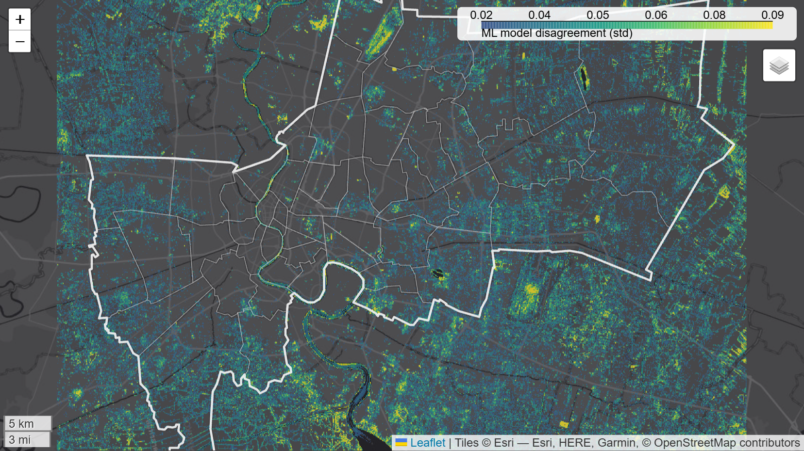
ML model disagreement How much five versions of the model, each trained with a different fifth of the map held out, disagree about each cell. Bright = the prediction depends on which places the model learned from.
Tick ML model disagreement in the sidebar. It shows the standard deviation of the flood probability across the five cross-validation models. Every model score in the ML model and Validation tabs now has a 95% interval from the spatial block bootstrap, including the cross-validation scores.
Be honest about the limits: these ranges cover elevation error and the ML model's sensitivity to its training data. They don't cover the other limits (static water, no pumps or drainage, 2020 population), so the real uncertainty is larger than the bands.
10. Key numbers cheat sheet
River/tidal mode (connectivity on). Greater Bangkok is the whole map area (about 18 M people, including neighbouring provinces). The headline cards use this. Bangkok (50 districts) covers only the city proper (about 10.9 M people, 1,581 km²). The table and district counts use this.
Water level
Flooded area greater Bangkok
People affected greater Bangkok
Flooded area Bangkok (50)
People affected Bangkok (50)
Districts >25% flooded
0.5 m
537 km²
0.52 M
55 km²
0.14 M
0 / 50
1.0 m
1,024 km²
1.02 M
168 km²
0.32 M
2 / 50
1.5 m
1,553 km²
2.11 M
371 km²
0.89 M
7 / 50
2.0 m
2,259 km²
3.92 M
678 km²
1.93 M
15 / 50
3.0 m
3,242 km²
9.19 M
1,138 km²
5.13 M
35 / 50
Other facts to have ready
Lowest districts on average: Lat Krabang 1.4 m, Bang Khun Thian 1.6 m, Nong Chok 1.7 m, Prawet 1.8 m, Min Buri 1.8 m.
First to flood: at 1.0 m, Bang Khun Thian (coast) is 45% flooded and Lat Krabang (east) is 27.5%.
Land at or below 1.5 m: 414 km², 26% of Bangkok's 50 districts.
Rain mode vs river mode at 1.0 m: 1,104 vs 1,024 km², and 1.23 M vs 1.02 M people (greater Bangkok).
Most robust risk district: Suan Luang, #1 under 4 of 5 weightings.
ML model, trained on 10 floods: ROC-AUC 0.97–0.99 on each left-out season (2011-only model 0.90–0.93); 0.85 on 2011's unseen blocks (2011-only 0.87, bathtub 0.67, risk index 0.45).
2011 was a river flood: the Chao Phraya ran above 130% of normal for 122 days, against 0–55 days in 2017–2025. Bangkok's own August–November rain was only 107% of normal.
Uncertainty at 1.5 m: 1,511–1,543 km² and 2.47–2.57 M people over 50 elevation-error runs (single run 1,553 km², 2.11 M). Only 69 km² of Bangkok floods in at least 90% of runs.
Most flooded districts in 2011: Nong Chok 31%, Khlong Sam Wa 23%, Don Mueang 21%, Bang Khun Thian 15%, Lat Krabang 13%.
Highest ML scores: Bang Khun Thian 0.53, Nong Chok 0.50, Khlong Sam Wa 0.42, Lat Krabang 0.41.
Current flood (radar, 27 Sep 2026): 99 km² of unusual water across greater Bangkok, 32 km² inside the city, after about 200 mm of rain on 25–27 Sep.
Most flooded now: Nong Chok 8.3%, Lat Krabang 5.9%, Min Buri 2.8%, Khlong Sam Wa 2.0%.
Models vs the 27 Sep flood: ML 0.96 (0.98 in Bangkok), 2011-only ML 0.91, bathtub 0.70, risk index 0.39 ROC-AUC.
Flood defences at 2.0 m: people affected in Bangkok fall from 1.93 M to 0.80 M; at 2.5 m the King's Dike is overtopped. With defences the bathtub scores 0.72 vs 0.67 on 2011 and beats the plain bathtub on all 9 radar passes.
Across all 9 radar passes: ML beats the bathtub on all 9, every one clear of the 95% interval.
District table (1.5 m, balanced weights). Every column can be sorted live, which is useful for audience questions about a specific district.
11. Anticipated questions
Question
Suggested answer
Is this a forecast of the current flood?
No. It's a “what-if” tool: it shows where water would go at a given height. The Current flood tab shows recent rainfall and modelled river flow for context, but they don't set the water level. Driving the simulation from live river gauges is a planned next step.
Why doesn't central Bangkok flood more?
Two reasons. The elevation data includes buildings, which makes the dense core look higher than the ground really is. The centre is also protected by flood walls, dikes and pumps: switch on Include flood defences and the inner city stays dry until the water tops the walls at about 2.5 m. Pumps and tunnels still aren't modelled, so treat the centre's result with caution.
Why does the flooded area jump at 0.5, 1.0, 1.5 m?
That's a quirk of the elevation dataset, not a real threshold. Copernicus rounds many flat areas to 0.5 m heights, so big patches switch to flooded together. Look at the overall trend.
Why are the headline numbers bigger than the table totals?
The headline cards cover the whole map area (greater Bangkok, about 18 M people). The table and district counts cover only Bangkok's 50 districts (about 10.9 M).
How accurate is the elevation?
It's a 30 m global satellite surface model, good for relative comparisons across the city. The app now shows the effect: the grey ranges and the Chance flooded layer come from 50 reruns with an assumed 0.7 m error. City-wide totals move by a few percent; individual streets are genuinely uncertain.
Who chose the weights? Aren't they arbitrary?
They're a transparent judgment, and that's why they're sliders. Show the five scenarios: the top districts stay much the same, so the conclusion doesn't depend on the exact weights. Calibrating against observed floods is the next step.
Where does the data come from, and how current is it?
Copernicus GLO-30 elevation (satellite radar), WorldPop 2020 population estimates, OpenStreetMap rivers and canals, and geoBoundaries districts. All are free and open.
Why stop at 3 m?
By 3 m most of the low-lying region is under water, and the bathtub assumption becomes unrealistic for a flood that big.
Is the machine-learning model better than the risk index?
Yes, by far, on every flood: for example 0.85 vs 0.45 ROC-AUC on 2011 and 0.96 vs 0.39 on the 27 Sep flood, always on areas or years it never saw. It's the best evidence we have, not a guarantee.
Why not just train on 2011?
That was the first version, and it's still in the app for comparison. Trained on ten floods, the model predicts ordinary years much better (0.97–0.99 vs 0.90–0.93 on left-out seasons, and better on all 9 of this year's passes). The cost is a slightly weaker score on the extreme 2011 flood.
Your numbers have error bars. How big is the real uncertainty?
Bigger. The ranges cover elevation error and the model's sensitivity to its training data. They don't cover static water, missing pumps or 2020 population. And the assumed elevation error size matters: doubling it to 1.4 m almost doubles the people affected at 1.0 m.
How do you know the ML model's lead isn't luck?
Open the Validation tab. Each score has a 95% interval from resampling 4 km blocks of the map. On all 9 radar passes the ML model's lead over the bathtub stays above zero across that interval.
Why did the hand-weighted index do worse than random?
It rates dense, canal-rich inner districts highest. In 2011 those were protected by walls and pumps and stayed dry, while farmland on the edge flooded. Hand-set weights can be confidently wrong, which is why testing matters.
Why does being farther from canals raise the ML flood chance?
Canals are densest in the protected city, and the fields that flooded in 2011 are farther apart. The model is picking up “protected city vs open farmland”, not canals keeping places dry. That's a correlation, not a cause.
Why leave population out of the ML model?
With it, the model learned “dense city = dry”, mostly because of flood defences and the satellite missing urban floodwater. That's a dangerous message for a flood tool, and removing it cost little accuracy (0.89 → 0.87).
Is the radar map the official flood extent?
No. It's our own analysis of public satellite images, useful for patterns across the city. For official figures, refer people to the Bangkok Metropolitan Administration or Thailand's disaster agencies.
Why does the radar show almost no flooding in the city centre?
Partly because the centre is better drained and protected, and partly because radar can't see water between tall buildings well. Treat “no flooding” in the dense core as “not detected”, not “dry”.
Is the river flow a gauge reading?
No. It comes from GloFAS, a global river model, and it reads high on the Chao Phraya. It's useful for comparing with the river's normal for the date, not for exact figures. For official river levels, refer people to the Royal Irrigation Department.
Isn't this just rice paddies?
We compare against the same weeks last year, so paddies flooded on the usual schedule mostly cancel out. The jump came right after about 200 mm of rain, which points to real flooding, but some field-management changes can still slip through.
Are these real buildings?
Yes. They're Google's AI-mapped footprints from satellite imagery, with heights from the same project. They're good at city scale, but individual buildings can be wrong, merged or missing.
Does “affected” mean the building floods inside?
No. It means the building stands in a ~65 m area that floods in that scenario. Raised ground floors, walls and pumps can keep water out, so treat it as “in the flood zone”.
Can I zoom in to my street?
You can zoom the map, but the model works on ~65 m cells, so it's meant for district-scale patterns, not individual buildings.
12. Limitations and next steps
Limitations (say these out loud, because it builds credibility)
“Bathtub” model: water is static. There's no flow speed, rainfall timing, tide cycle or flood duration.
Flood defences, simplified: the river walls, King's Dike and airport dike are modelled (when switched on) with one crest height per section; pumping stations, drainage tunnels, gate capacity and the west bank's polder dikes are not.
Surface elevation: buildings and trees inflate heights, especially in the centre. Ground subsidence of a few cm per year isn't included. Its effect is now shown, not just mentioned: ranges on every headline number and a chance-flooded map (Section 9). But the error size behind them (0.7 m) is an assumption.
Elevation rounding: many flat areas are stored in 0.5 m steps, which makes the curve jump at those levels and puts the single simulation outside its own uncertainty range.
Population: 2020 modelled estimates of where people live, not where they are during the day.
Risk index: relative, not absolute. It has no vulnerability factor (for example income, building type, or access to hospitals). Against 2011 it scored below random.
ML model: trained on one extreme river flood and nine ordinary seasons, with satellite labels that under-count urban flooding. It says nothing about cloudbursts and under-rates places that flood only in extreme years. Where its five cross-validation versions disagree is shown as a map layer.
Uncertainty shown is partial: the ranges cover elevation error and the model's training data, not every limit on this list, so the real uncertainty is larger.
Radar flood maps: under-count water between buildings, can mistake smooth surfaces or field flooding for floodwater, and are snapshots every 4–8 days.
Buildings: AI-estimated footprints and heights; “affected” is judged per ~65 m cell, not per building; small sheds left out in the six largest districts.
Next steps
Keep testing: after the 2026 season, score it as a whole, then add it to training and hold out 2027.
Go live: rainfall and modelled river flow are now shown next to each radar pass; the next step is using real river-gauge levels to set the simulated water level.
Refine defences: surveyed crest heights along each wall, the west bank's polder dikes, and pumping capacity.
Add vulnerability: hospitals, schools and income data to go beyond exposure.
Share it: deploy on Streamlit Community Cloud so anyone can open a link.
13. Appendix
Data sources
Layer
Source
Resolution
Elevation
Copernicus GLO-30 DEM (public AWS open data)
30 m, resampled to ~65 m
Population
WorldPop 2020, constrained, Thailand
100 m
Rivers & canals
OpenStreetMap via the Overpass API (waterway = river, canal)
Vector, 5,537 segments
Districts
geoBoundaries, Thailand ADM2 (Bangkok's 50 khet)
Vector
2011 flood (ML training data)
Global Flood Database, event DFO_3850 (via Google Earth Engine)
250 m
Land cover
ESA WorldCover 2021 (AWS open data)
10 m
Current flood
Sentinel-1 radar (Copernicus, via Google Earth Engine); permanent water from JRC Global Surface Water
10 m, mapped at 20 m
Rainfall
Open-Meteo weather-model estimates (no key); for past seasons, the Open-Meteo historical archive (ERA5)
Daily
Wet-season flood labels, 2017–2025
Sentinel-1 radar via Google Earth Engine, August–November, compared with the same weeks a year earlier
~65 m grid
River flow
GloFAS via the Open-Meteo Flood API (no key), Chao Phraya at Nonthaburi; normal = 1996–2025 median for the date
Daily, ~5 km
Buildings
Google Open Buildings v3 footprints (confidence ≥ 0.7) and 2.5D Temporal heights, via Google Earth Engine
Per building; heights 4 m
Critical facilities
OpenStreetMap (hospital, clinic, school, university, police, fire station)
Points
Flood defences
Routes: Royal Development Projects Board and Think of Living (2011), traced on OpenStreetMap roads. Crests: BMA flood-wall figures, JICA (Rom Klao Road 2.47 m), Airports of Thailand (3.5 m)
Lines, ~65 m grid
Basemap
Esri World Gray Canvas tiles
Online tiles
Rebuilding the ML model
python scripts/prepare_ml_data.py --gee-project YOUR_PROJECT # or --label-file a downloaded GFD map
python scripts/build_flood_archive.py --gee-project YOUR_PROJECT # radar wet seasons 2017-2025 (~10 min a year)
python scripts/event_context.py # each season's rain and river (no key)
python scripts/train_model.py # about 35 min; scores, intervals, disagreement map
Rebuilding the elevation uncertainty
python scripts/dem_uncertainty.py # 50 runs, about 4 min
python scripts/dem_uncertainty.py --sigma 1.4 --out-dir data/processed/dem_uncertainty_pessimistic
Updating the current flood
python scripts/fetch_current_flood.py --gee-project YOUR_PROJECT # new radar passes, added to the archive (also runs daily on GitHub)
python scripts/evaluate_current.py # re-score the models, with 95% intervals (~3 min)
python scripts/fetch_current_flood.py --weather-only # just refresh rain + river flow (no Earth Engine)
Rebuilding the flood defences
python scripts/prepare_defences.py # routes from OpenStreetMap roads, crests from the sources in the script
python scripts/train_model.py --baselines-only # re-score the bathtub on 2011 without retraining the ML model
python scripts/evaluate_current.py # and on every radar pass
Rebuilding the building data
python scripts/prepare_buildings.py --gee-project YOUR_PROJECT # all 50 districts, about 45 min
Regenerating the screenshots and this PDF
streamlit run app.py --server.port 8599 --server.headless true
python scripts/capture_screenshots.py # needs: pip install playwright, plus Google Chrome
python scripts/build_guide_pdf.py # docs/presenter_guide.html → PDF